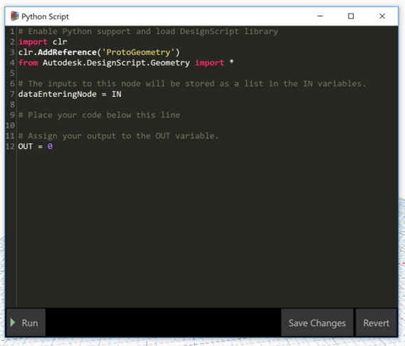

2 - Python Scripts in Dynamo
This section will go through the basics on how to write custom python code within Dynamo.
Dynamo has a powerful feature, similar to other VPL, which is the ability to write custom python code on its own text editor, allowing to perform large methods and logic in a compressed and more performant manner, by being able to load libraries an modules like ProtoGeometry and Revit utilities.

As you can see when opening a new Python Script node, it comes with a default template which contains:
- Loaded ProtoGeometry module/library, which is the library Dynamo Geometry is based on, allowing to access all constructors and methods as if using nodes on the canvas.
- A
dataEnteringNodevariable mapped to theINinternal variable. This variable is a list containing the values connected to the input ports. To access first port you would queryIN[0], secondIN[1], etc. You can create as many input ports as required. - An
OUTvariable. This, similar to theINinternal variable, is what the python script will exposed on theOUTport on the node. output ports can only be one.
Dynamo uses IronPyton, a flavour of Python tightly integrated with .NET frameworks.
Key Features
- Load all modules available on IronPython.
- Can use Dynamo Geometry library to perform expensive computational operations in a single contained environment, reducing graph size and RAM overhead.
- Can easily integrate modules/libraries to interact with the Revit API.
- Can run a python file (
.py) by loading it from its path in disk. - Complex loop statements can be easily written to overcome the lack of a VPL.
Disadvantages
- As is not Python per se, some very useful modules/packages native to Python can not be used in this environment.
- Each Python Script node has its own scope, so classes or methods defined in one cannot be shared across.
- Does not implement any Replication principle, so developer must take into account and/or define clearly the expected input.
- It only has one output port, so when returning multiple values, these must be as a list and handle that afterwards.